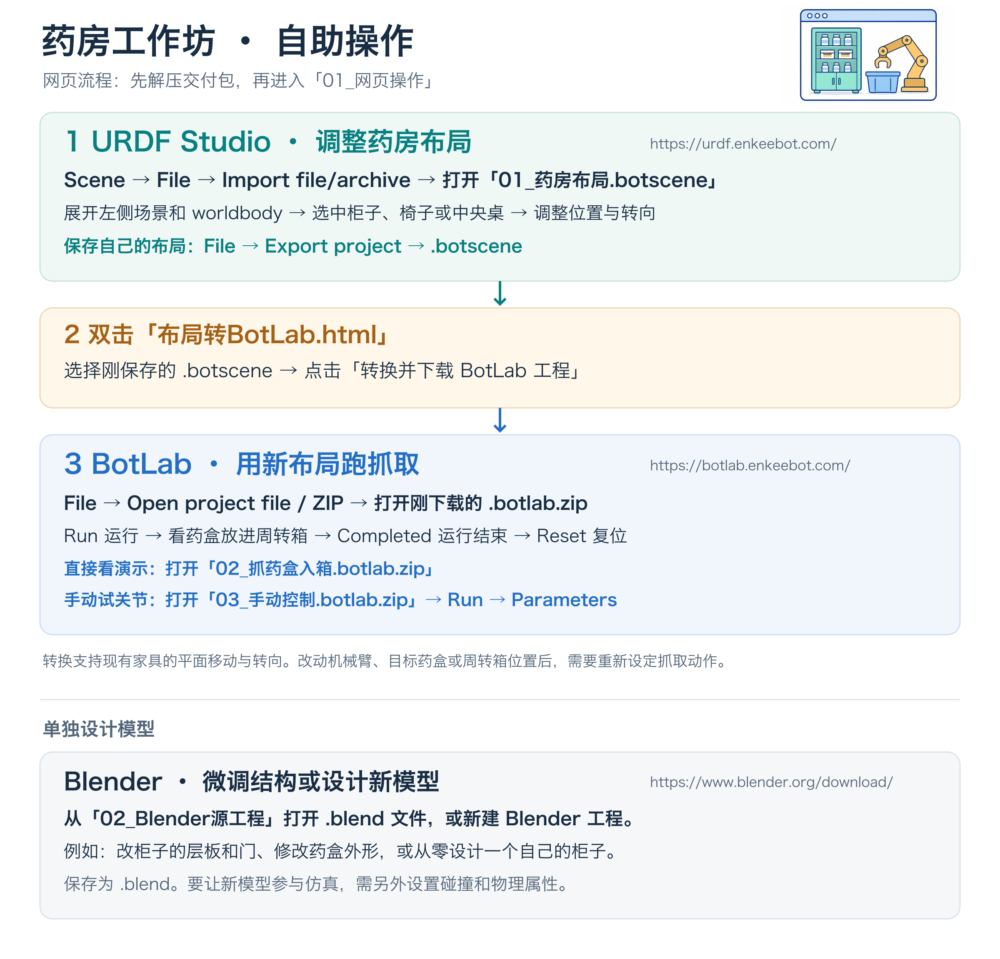
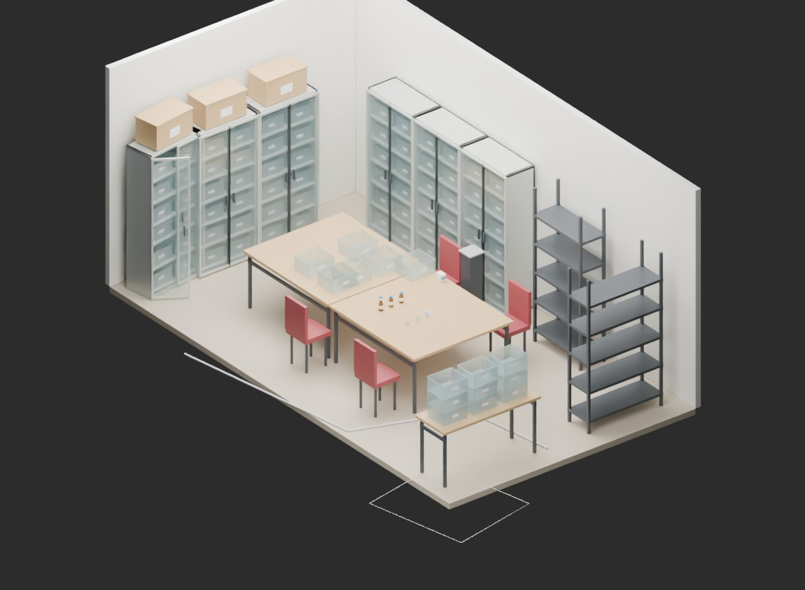

药房机器人工作坊
完整版操作流程图

自己编排抓取动作
选择工位，拖动手腕安排路线。在时间轴选定一秒，可一起调整手臂和手指，回放后下载 BotLab 工程。
下载并导入
URDF Studio 场景
在 Scene 里选 File → Import file/archive，导入 .botscene 调整家具。
下载 .botscene · 打开 StudioBotLab 抓取演示
选 File → Open project file / ZIP，导入 .botlab.zip 后点击 Run。
下载抓取工程 · 打开 BotLabBotLab 手动控制
导入后打开 Parameters，调整机械臂和灵巧手的关节。
下载手动控制工程
打开 Blender 从这里开始
解压下载的 ZIP，在 Blender 打开 pharmacy-room.blend 编辑现有药房，或打开 pharmacy-empty.blend 自己设计。
药房场景预览

用自己改过的布局跑仿真
1. 调整家具
在 URDF Studio 打开包内 .botscene，摆放柜子、椅子和中央桌，再保存布局。
2. 转换布局
打开资产包里的「布局转BotLab.html」，选择保存的布局，下载 BotLab 工程。要修改动作，把新工程导入抓取动作编辑器。
3. 运行抓取
在 BotLab 中导入 .botlab.zip，点击 Run。